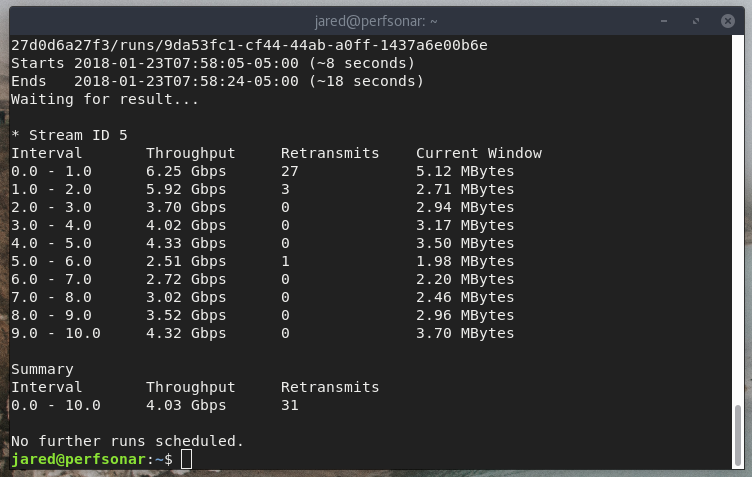

Jared Dunbar - Spring 2018
I'm taking 2 credits of MP351 and 1 credit of MP352
COSI Stuff
I secured faster network speeds for COSI through OIT. This includes a theoretical 10G connection to the internet, as well as an upgrade for Mirror upload bandwidth to 1Gb/s, up from 750Mb/s.
I set up a speedtest to test COSI's internet bandwidth, using a piece of software called perfSonar. After a bit of configuration and testing, I was able to achieve 6.25Gb/s to Syracuse, NY. I tried testing against other locations, but it was not as fast for unclear reasons.

Server Room Stuff
I redid some network infrastructure in the network racks. I implemented STP across the board for all of the managed switches, and to make COSI a bit more segmented so that a switching loop on one part of the room wouldn't affect another, or a switching loop in the ITL wouldn't affect COSI, etc. I also changed the network topography so that bandwidth between machines in COSI and the ITL is much faster to servers in the server room, with the ability to achieve multi-gigabit speeds between servers and the endpoints as a whole. Most notably, a 4G LACP LAG between swm1 and swf1 allows each switch in the lab to be up to 1 hops from the swf1 switch at most, and thus at most 6 hops from the internet. I have not really shown all of the specific switches to the endpoints or servers, nor the particular number of endpoints to make the image more brief.

I finished handing off the VM host to Josh Coppolla, and wrapped up the previous semester's CS350 projects. Most of my services got handed off this semester in a sort of odd but effective method.
ITL
I re-imaged some of the computers in the ITL and did some maintence to the ones that needed it. Much of the work I did to the ITL was actually backend architecture with the network, rather than working directly with the ITL computers. Since Bacon has faster drives, it's much faster to deploy operating systems to computers in the ITL now than it was previously, and Bobby reports that the hard drives in the computers in the ITL is now the bottleneck, rather than the network.